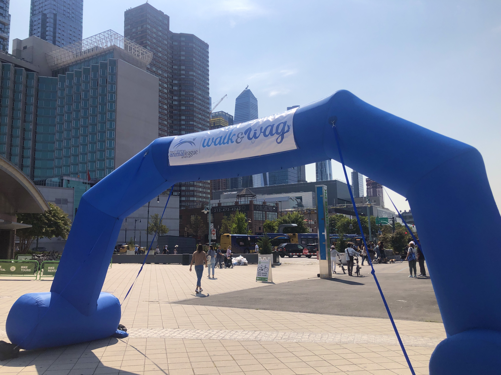
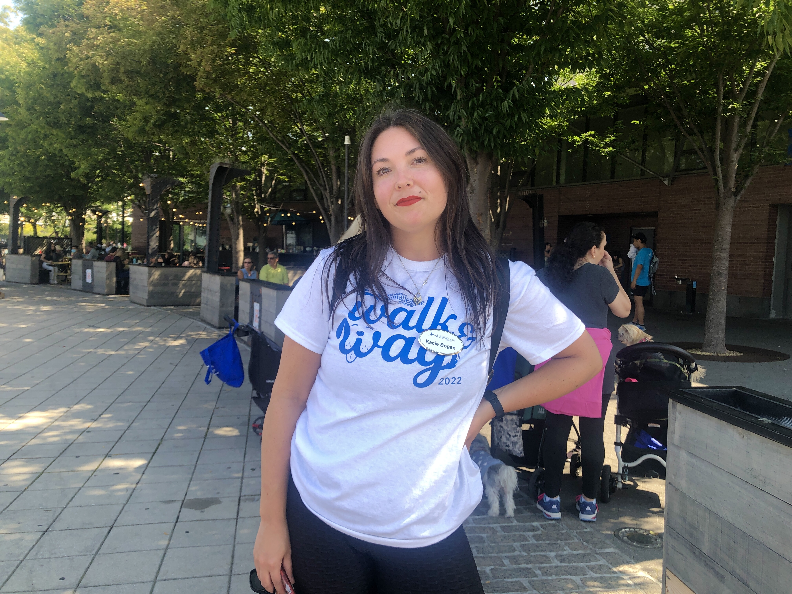
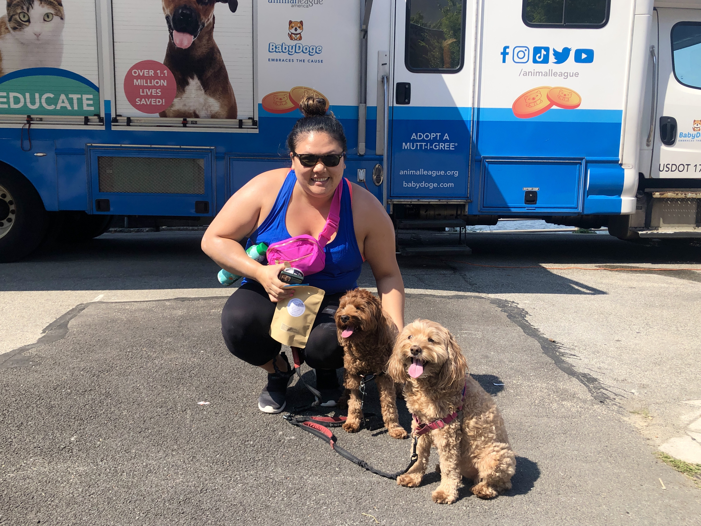
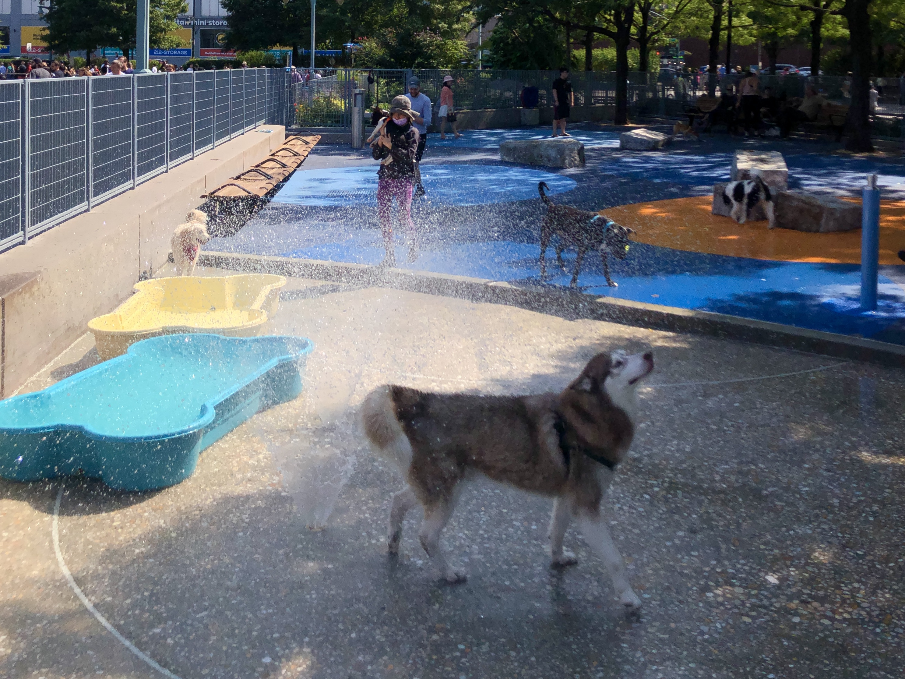
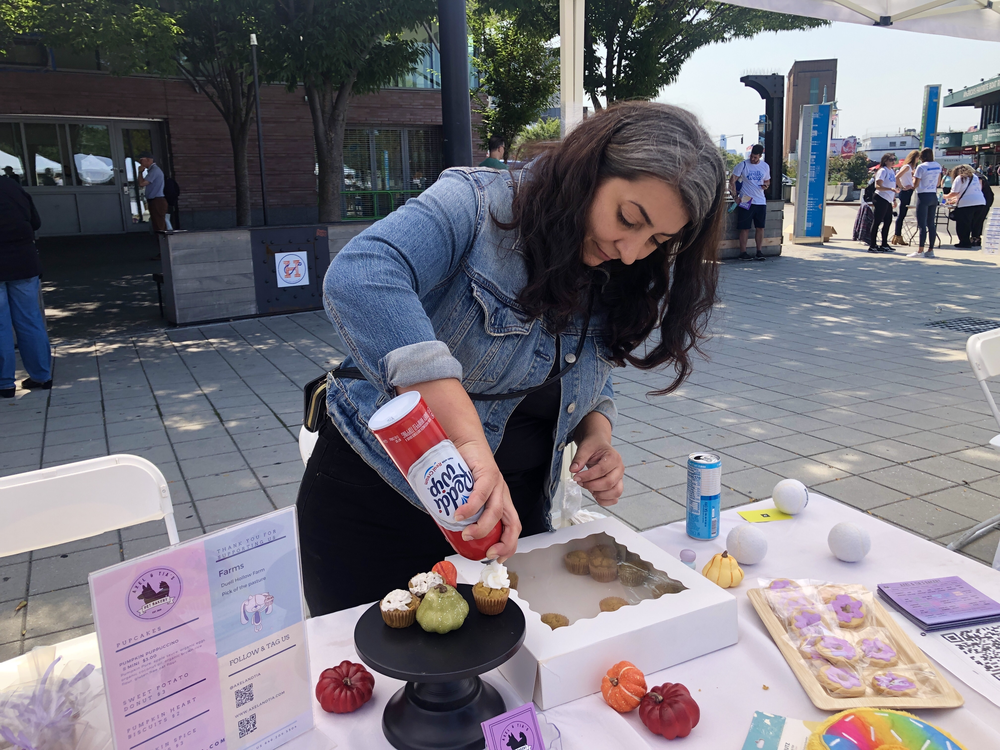

Largest No-kill Shelter on Long Island Raises $150,000 in Saturday Fundraiser
On September 16, 246 walkers and their dogs from 116 different cities trecked three-miles down the Hudson River.

Walk and Wag starting line located at Pier 84. This is the first time the event was hosted in Manhattan. Credit: Brianna Poulos
Dozens of animal lovers gathered by the Hudson river for the North Shore Animal League’s sixth annual fundraiser this month. This was the first time the 3-mile walk was hosted in Manhattan and more than 246 people participated.
I“We are based in Fort Washington on Long Island, we love our supporters there, but we also have a national presence. We wanted [the event] to be in the heart of the world, which is Manhattan,” said Kacie Bogan, the senior events manager of North Shore Animal League.
Walk and Wag was also available virtually to reach more supporters nationwide. Bogan said those who participated virtually were encouraged to visit their local parks and trails to complete the walk.
“We have hundreds of walkers walking, even if they weren't here today. We have walkers from California to New York. We're in over 25 states,” Bogan said.
North Shore Animal League is the largest no-kill shelter on Long Island, facilitating more than 60,000 pet adoptions a year.
Some Important Walk and Wag Event Numbers
More then 246 people, from 116 different cities, participated in the three-mile walk for North Shore Animal League.
More than $150,000 was raised by walkers, donors and sponsors at the Walk and Wag event.
North Shore Animal League is the largest no-kill shelter on Long Island, rehoming more than 60,000 furry friends a year.

Kacie Bogan, North Shore Animal League’s senior event coordinator, in a Walk and Wag fundraiser tee-shirt. This is Bogan’s sixth year organizing the event.
Credit: Brianna Poulos
“Rescue, nurture, adopt and educate - that is our mission. That's what the purpose of this whole [event] was - to raise funds for our mission and to get everybody together and have this amazing walk in a beautiful location,” Bogan said.
Brianna Pang Sawhney didn’t plan on participating in Walk and Wag when she brought her Labradoodles, Chewie and Lando, to the pier for a walk, however when she saw the excitement of the event she quickly joined as a walker.
“I feel like people will often say that in the city it's hard to be a dog owner, but I think that having resources like this and having fairs like this is really helpful,” Sawhney said.

Brianna Pang Sawhney with her two dogs, Chewie (front) and Lando (back) after the walk. Sawhney and her pups are regulars at the Hudson River pier.
Credit: Brianna Poulos
“Aviv Sinai, a regular at the Pier 84 Dog Run, echoed these sentiments about being a dog owner in the city.
Sinai travels uptown to the dog run every weekend to let his dog, Cedric, run around.
“If you don't live in a place close to a dog park, it's hard. Apartments are small which is also hard,” Sinai said.
While Sinai didn’t participate in the walk, he said it was nice to see so many dog owners out with their pets.

Dogs playing in the sprinklers at the Pier 84 Dog Run.
Credit: Brianna Poulos
Sawhney said that a highlight of the event for her was connecting with all of the vendors.
Pumpkin spice biscuits and CBD-infused dog treats were just a few sweet snacks that Sawhney purchased for her pups.
Alina Andranikian of Axel & Tia's Pet Bakery was one of the many vendors at the event.
Andranikian specializes in baked goods made with wholesome ingredients that can be shared by both pets and their owners.
“We work with local and sustainable farmers to create an eco-friendly brand. We just want to create healthy sugar-free dog treats for people to enjoy with their pets,” said Andranikian.

Alina Andranikian topping her pumpkin spice muffins with whipped cream. All of Axel & Tia’s baked goods can be eaten by both pets and their parents.
Credit: Brianna Poulos
Andranikian said that her bakery is best known for its cakes that are decorated with custom pet portraits.
“We donate $1 from every purchase to One Tree Planted. Our main focus is to give back while making something fun for dogs and their parents,” Andranikian said.
This was Andranikian’s first time participating in Walk and Wag but said that she would like to be a part of it again.
Bogan said new walkers can still register for the event and participate virtually until September 30.